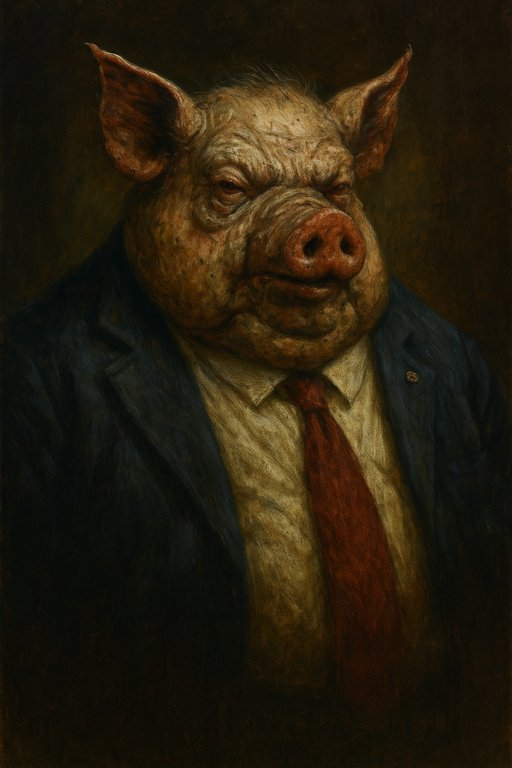

Publicado em 2025-05-29 14:01:14
Portugal, esse palco de tragédias e comédias, oferece-nos mais um episódio digno de um romance kafkiano — ou talvez um teatro de fantoches, onde os protagonistas se vestem de toga e gravata, mas continuam a pastar no mesmo curral.
O Partido Socialista, outrora estrela brilhante da esperança, caiu do pedestal para a modesta terceira força política. Não por acaso, mas porque o povo, esse público silencioso, cansou-se do mesmo roteiro repetido há décadas. A lição foi merecida, um castigo de um júri popular que já não aceita farsas.
Mas o espetáculo não termina aqui. A arrogância permanece intacta, vestida de desculpas e discursos decorados, como atores que não admitem a queda do cenário. Afinal, durante 50 anos de PS e PSD, fizeram da corrupção uma arte nacional, com a justiça convertida numa farsa tão descarada que só falta a banda sonora dramática para completar.
Como no “Triunfo dos Porcos”, a elite que se formou no topo dessa pirâmide é uma confraria de medalhados e bajuladores, preocupados em manter o poder, as regalias e as alcavalas. Os pobres? Ah, esses continuam a ser os verdadeiros cidadãos de segunda, a pagar a factura da incompetência e da ganância.
Os ricos e poderosos escapam, porque as leis, essas mesmas criadas para os proteger, são aplicadas com a mão leve e os olhos fechados. A justiça virou uma marioneta, atada por fios invisíveis aos interesses instalados, com juízes a jogar num campo que não é o do direito, mas o do medo e do silêncio.
Mas a história, essa velha senhora impiedosa, não se esquece. Anota, grava e, quando chegar a hora, julgará sem medo ou piedade. Porque o povo português, apesar de tudo, sabe resistir. Sabe rir da tragédia e cantar a sátira enquanto sonha com um dia em que os porcos caiam do palco e os verdadeiros atores tomem o seu lugar.
E tu, caro leitor, que assistes a este espetáculo grotesco, lembra-te: a mudança começa com a voz de cada um, com o despertar do inconformismo e a coragem de dizer basta.
Porque o teatro do poder pode ser velho, mas o público nunca perde a fome por justiça.
Claro, Francisco! Aqui vai um excerto forte e contundente, perfeito para abrir a crónica com impacto:
“Durante 50 anos, PS e PSD transformaram Portugal num palco onde a corrupção é protagonista, a justiça é cúmplice e o povo, sempre o mesmo, assiste ao ‘Triunfo dos Porcos’ — uma farsa de poder onde os ricos sorriem e os pobres pagam a conta.”
Artigo de Augustus Veritas in Fragmentos de Caos
Imagens cortesia de OpenAI (c)